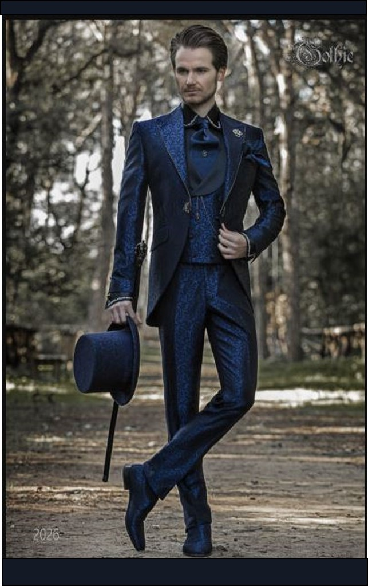
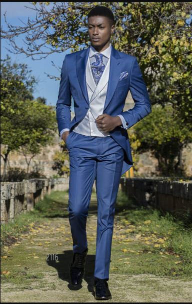
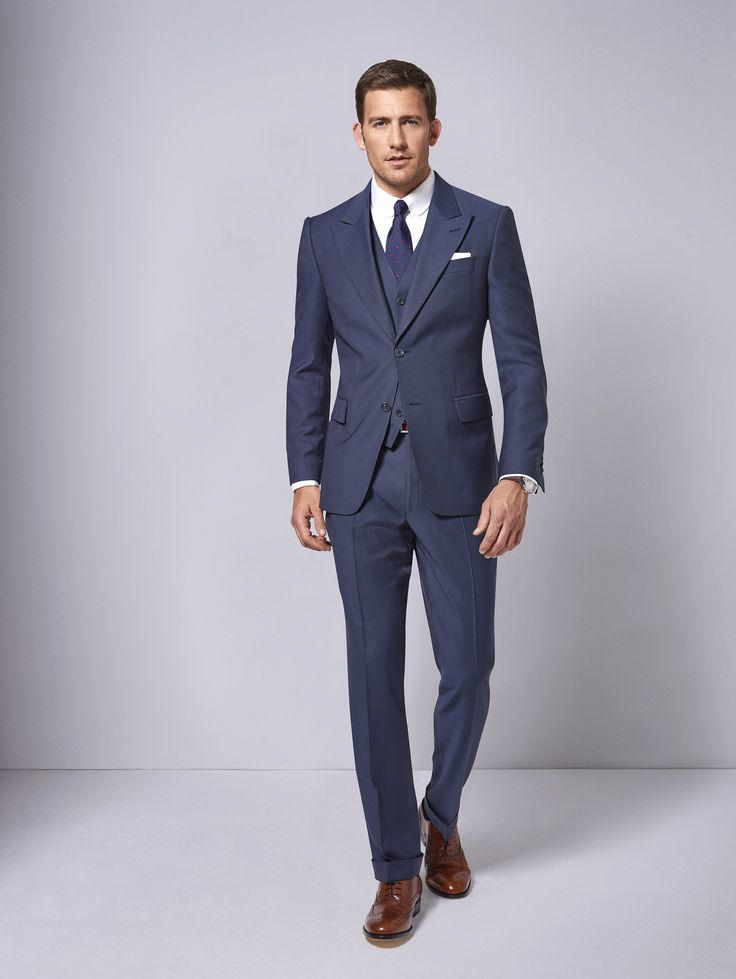
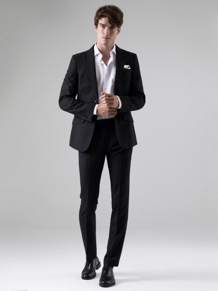

NOVIOS
Novio -1D
Este traje corresponde a la indumentaria masculina de máxima etiqueta. Es decir, es el más elegante, por lo que únicamente se podrá lucir en matrimonios de noche y con un código de vestimenta que exija etiqueta de gala.
Novio -2D
Además, incluye chaleco, camisa, humita y un pantalón, por lo general, con una franja de seda en los laterales. El frac en su versión clásica lo encontrarán en negro con blanco, aunque también pueden elegirlo en tonalidades más modernas como azul marino y gris.
Novio -3D
También conocido como dinner jacket, es perfecto para un matrimonio de noche que no exija tanta rigurosidad, ya que es más sofisticado que un terno, pero menos ceremonioso que un frac o chaqué.
Novio -4D
Ideal para matrimonios por el civil o de corte más informal, el terno está compuesto por dos piezas, el saco y el pantalón, aunque a veces también incorpora un chaleco. Es el traje más conocido.